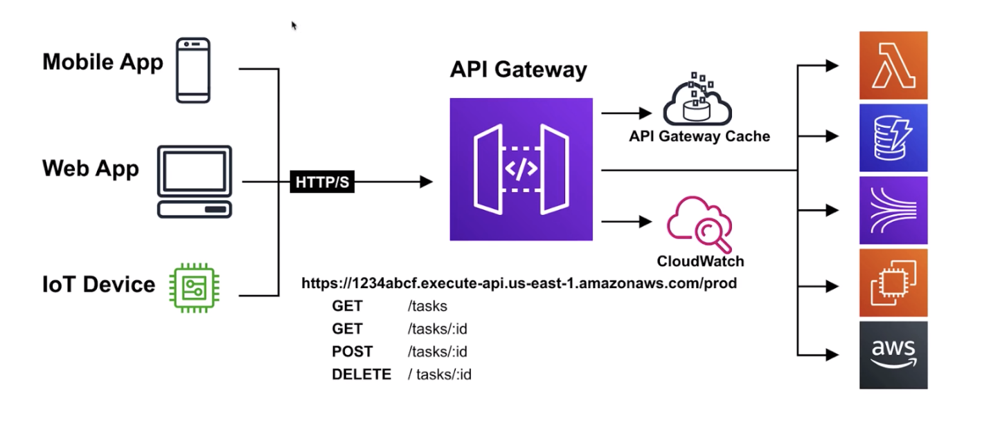
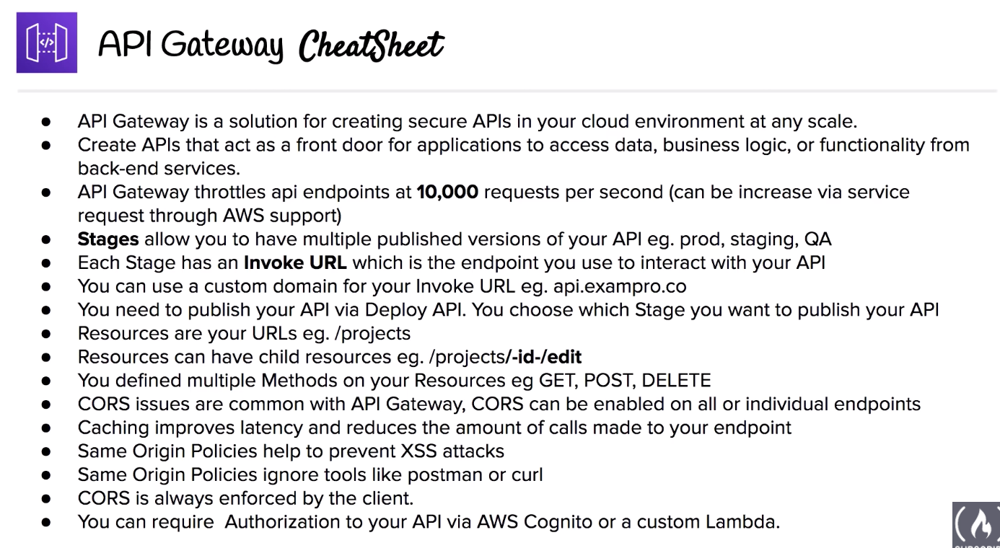

The current note and all other notes titled “AWS SAA Test prep” are based on the 10-hour free tutorial hosted by Andrew Brown and published by freeCodeCamp, which is accessible on YouTube through this link. Special thanks for the maker and publisher of the awesome video!

API Gateway is a solution for creating secure APIs in your cloud environment at any scale.
Front door for applications to access data, business logic, or functionality from back-end services.
Key features
Handles up to hundreds of thousands of concurrent API calls.
- Automatically highly available
- Maintains multiple versions of your API
- Allows you to track and control usage of your API. Throttle requests to help prevent attacks
- Expose HTTPS endpoints to define a RESTful API
- Send each API endpoint to a different target.
To prevent your API from being overwhelmed by too many requests, Amazon API Gateway throttles requests to your API using the token bucket algorithm where a token counts for a request.
When request submissions exceed the steady-state request rate and burst limits, API Gateway fails the limit-exceeding requests and returns 429 Too Many Requests error responses to the client.
API Gateway - Configuration
Resources
When you create an API you need to also create multiple Resources
Resources are the URLs you define.
Resources can have child resources.
Methods
You need to define Methods on Resources.
You can define multiple methods on a resource.
Methods allow you to make API calls that resource url with that protocol.
Stages
In order to use your API you need to Deploy it to Stages.
Stages are versions of your API.
Invoke URL
For each stage, AWS provides you an Invoke URL
This is where you’ll make your API calls.
It is possible to use a custom domain for your invoke url.
Deploy API
Every time you make a change to your API you need to Deploy it via the Deploy API action. When you deploy, you choose the Stage.
Integration Type
When you create an API Method on a resource you need to choose the integration type:
- Lambda
- HTTP
- Mock
- AWS Service
- VPC Link
Most common: Lambda
You have fine-tuned control over the Request and Response for the method execution.
API Gateway Caching
Cache results of common endpoints.
- When enabled on a stage, API Gateway caches responses from your endpoint for a specified time-to-live(TTL) method.
- API Gateway responds to requests by looking up the response from the cache (instead of making a request to the endpoint).
Benefits:
- Reduces the number of calls made to your endpoint.
- Improves latency of the requests made to your API.
Cross-Origin Resource Sharing (CORS)
CORS is a way that the server at the other end (not client code in the browser) can relax a same-origin policy.
- Allows restricted resources (eg. fonts) on a webpage to be requested from a different domain than the initial resource that it came from.
- Should always be enabled if using Javascript/AJAX that uses multiple domains with an API gateway.
Cross-Origin Resource Sharing (CORS) is a mechanism that uses additional HTTP headers to tell browsers to give a web application running at one origin, access to selected resources from a different origin. A web application executes a cross-origin HTTP request when it requests a resource that has a different origin (domain, protocol, or port) from its own. –MDN: CORS
Same Origin Policy
Same Origin Policy is a concept in the application security model, where a web browser permits scripts contained in a first web page, to access data in a second webpage.
- Same Origin Policies are used to help prevent Cross-Site Scripting (XSS) attacks
- Enforced at the web browser level
- Works only if both web pages have the same origin
- Ignore tools such as Postman and Curl
